Four years of exhibition design for Bayer Consumer Health — spatial planning, environmental graphics, and vendor art direction across expo booths and executive meeting suites.

NACDS — the National Association of Chain Drug Stores — is where every major consumer health company in North America competes for retailer attention. Bayer, Sanofi, GSK, J&J, Reckitt: all within a few hundred feet of each other. Retail buyers walk the floor comparing booths the way consumers compare packaging on a shelf. Your environment is your brand's first impression.
Bayer needed a trade show presence that projected the scale of a multi-billion-dollar portfolio (Claritin, Aleve, One A Day, MiraLAX, Astepro), created distinct meeting environments for executive retail conversations, and visually outperformed competitors spending comparable budgets in the same hall.
The program ran across two formats with different spatial challenges: the Total Store Expo (TSE) — 30×40 ft and 30×30 ft island booths surrounded by competitors — and the Annual Meeting, where branded executive suites at a resort replaced the open floor.
The spatial strategy started with a fundamental question: how do you make a 30×40 island booth feel like a destination rather than just a stop? We organized the footprint into four programmed zones, each assigned to a brand cluster — high-awareness seasonal brands facing the traffic aisles, wellness brands deeper in, the legacy pain portfolio anchoring one side, and a staffed reception counter creating a natural arrival moment at the main entrance.
For the Annual Meeting, the challenge inverted. Instead of competing on an open floor, we transformed resort meeting rooms into 360° branded environments. Every wall became a brand canvas, with dual digital screens at the focal wall and product displays integrated into the perimeter.

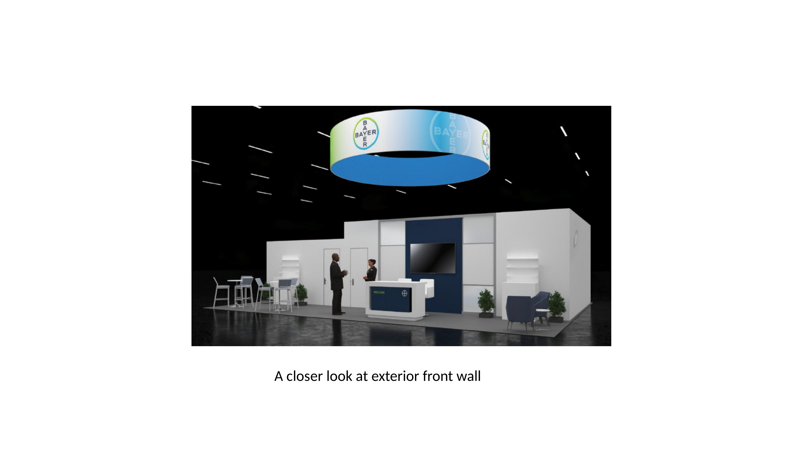
Before any vendor work began, I developed the creative brief: brand zone assignments, messaging hierarchy, vignette concepts, and LED lighting proposals. This direction guided IMPACT XM through multiple rounds of production design.
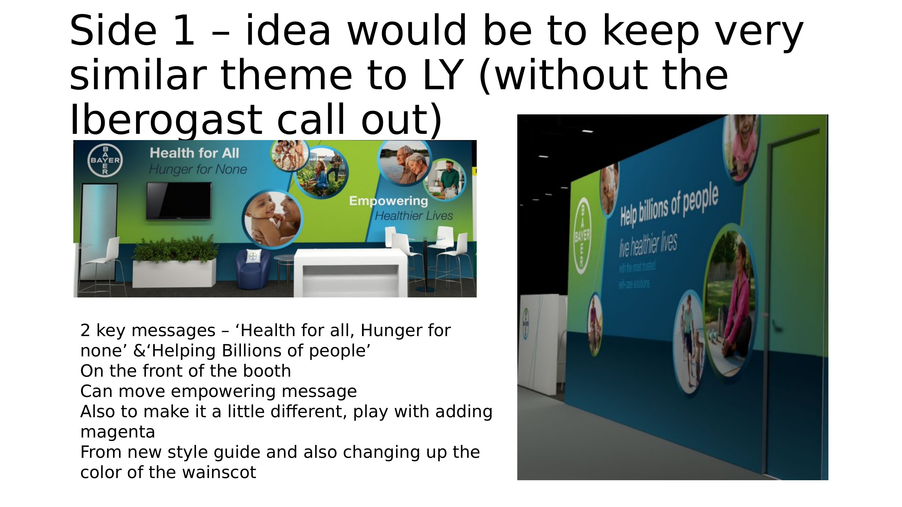
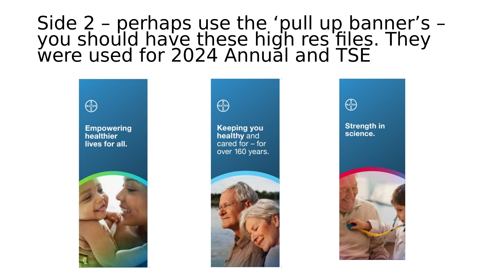
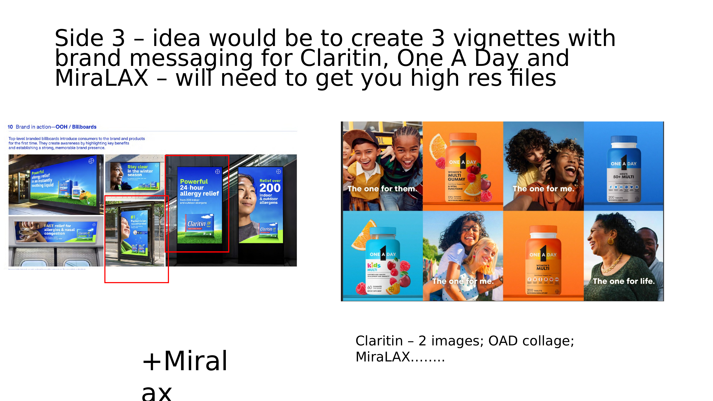
The graphic system was designed to flex across both formats. The same visual language — lifestyle photography at scale, product vignettes, a teal-and-orange palette with dimensional graphic elements — scaled from 40-foot walls down to intimate meeting-room panels without losing impact.


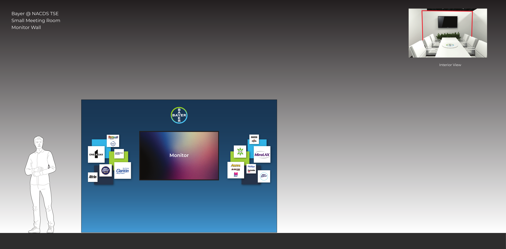
Managed iterative proof cycles with IMPACT XM — from concept sketches through six rounds of revision to final production-ready graphics. Each panel was reviewed for messaging accuracy, photography quality, and brand consistency.
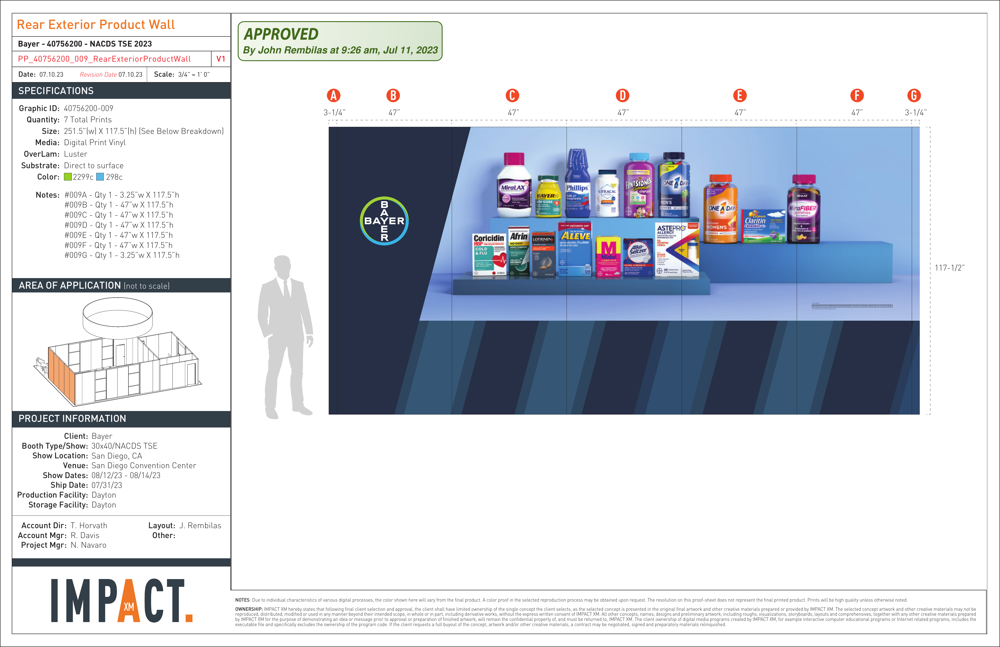
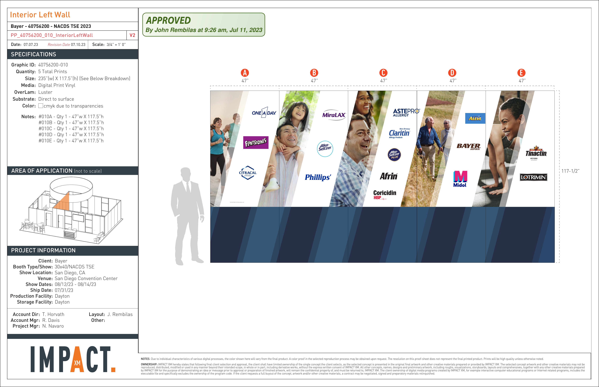
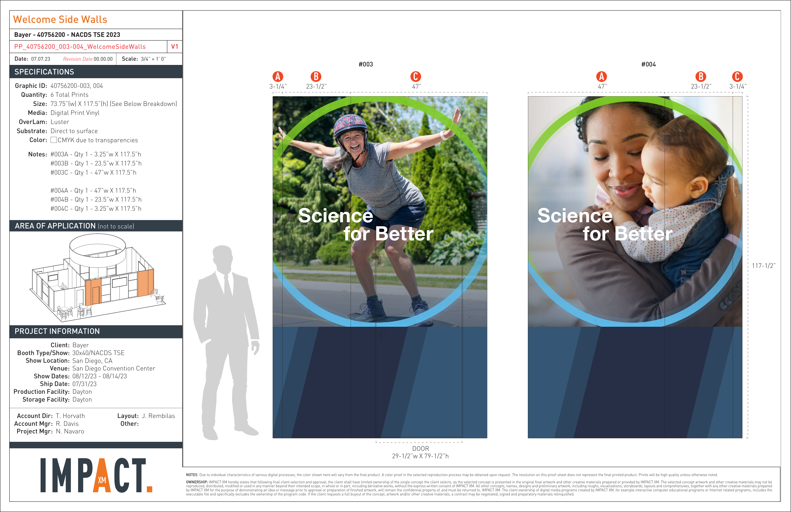


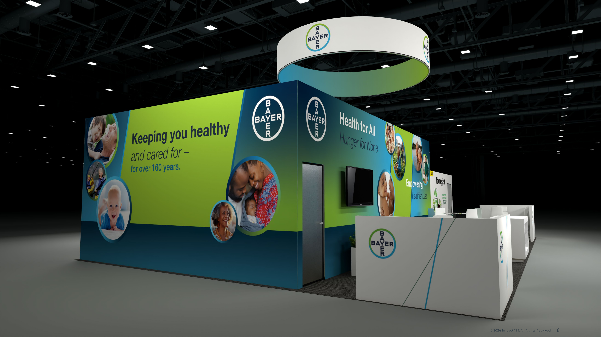


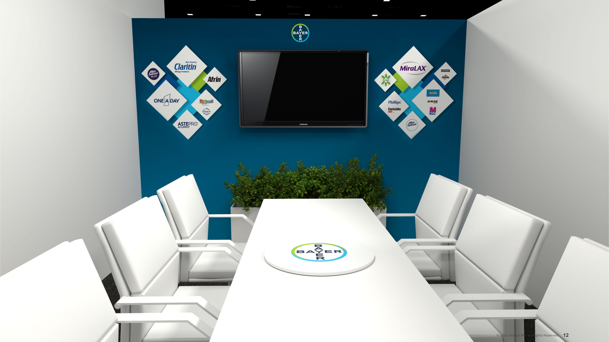
A smaller footprint required rethinking the spatial strategy — different zoning, updated material palette, blue curved overhead canopy, and angled wall panels.


The Annual Meeting required transforming resort conference rooms into 360° branded environments. Every wall became a canvas. The oval conference table was centered for executive conversations, with dual digital screens at the focal wall and product displays integrated into the perimeter.
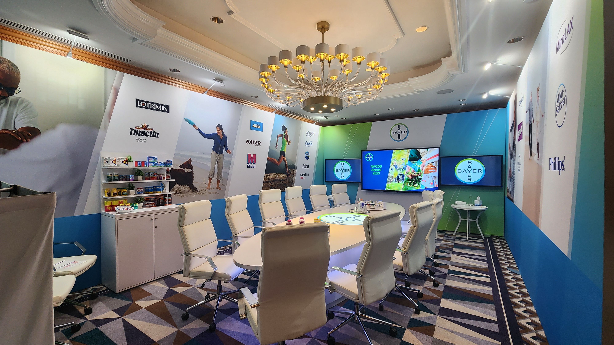
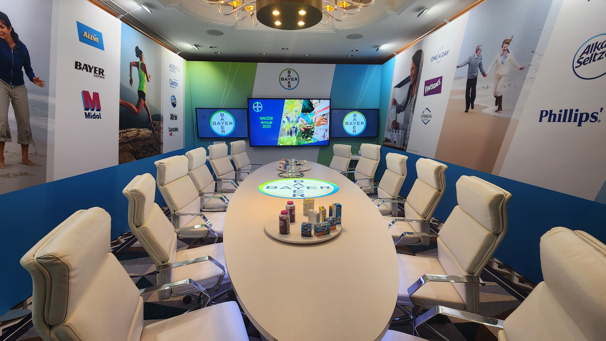
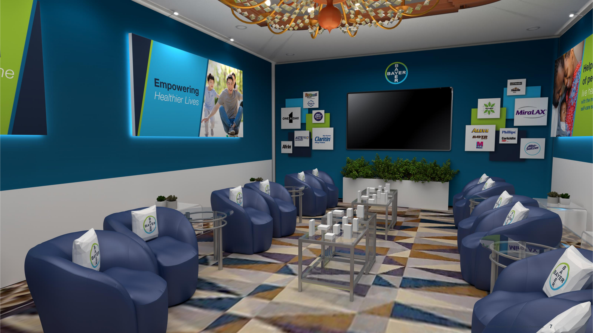
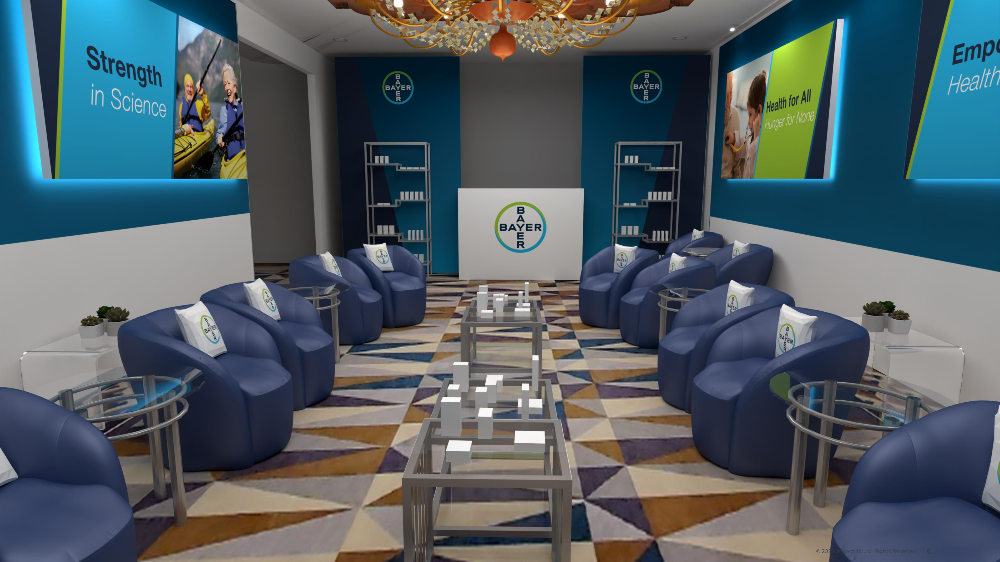


The finished booth held its ground on a floor packed with direct competitors. The dimensional overhead canopy, lifestyle-scale graphics, illuminated product vitrines, and curated material palette created a distinctly premium presence that buyers noticed. The program has run continuously for four years and counting, with the graphic system evolving each cycle while maintaining brand coherence.
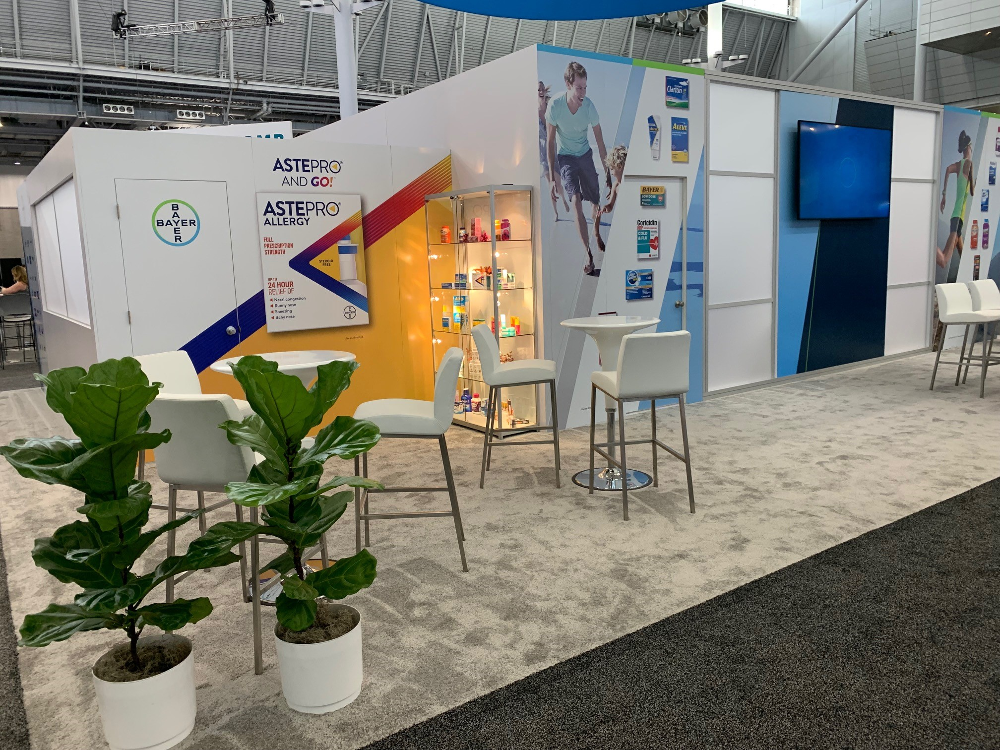
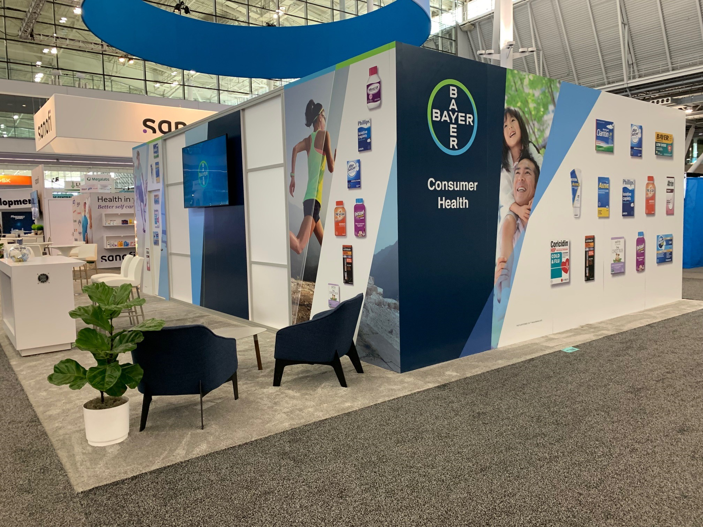
Lead designer and art director for the full NACDS program. Responsible for spatial planning, brand zoning strategy, environmental graphic design, creative direction to IMPACT XM (production vendor), iterative proof management across 6+ revision rounds, and coordination of print production. Managed both TSE expo floor booths and Annual Meeting executive suites under one cohesive brand system.